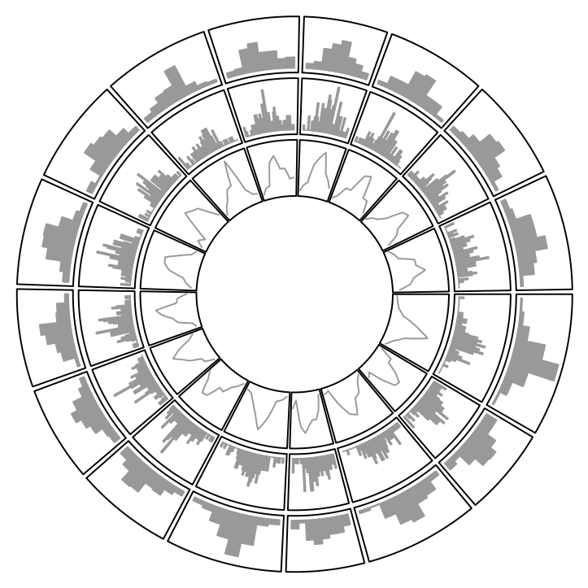
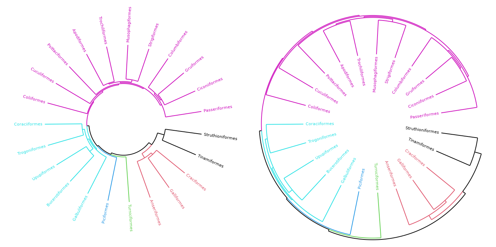

5 Implement high-level circular plots#
In this chapter, we demonstrate several examples that combine low-level graphic primitives to construct specialized high-level circular visualizations.
5.1 Circular barplots#
circlize-py already provides
circos.barplot() for vertical radial bars. Here we
construct a different style—concentric horizontal bars arranged inside a
single sector and track (you could equivalently place them into nine
separate tracks with almost identical code).
import numpy as np
import matplotlib.colors as mcolors
import matplotlib.pyplot as plt
from circlize import CELL_META, circos, mm_x
rng = np.random.default_rng(123)
category = [f"category_{i}" for i in range(1, 10)]
percent = np.sort(rng.integers(40, 81, size=9))
cmap = plt.get_cmap("rainbow")
color = [mcolors.to_hex(cmap(v)) for v in np.linspace(1.0, 0.0, len(percent))]
circos.par(start_degree=90, cell_padding=(0.0, 0.0, 0.0, 0.0), points_overflow_warning=False)
circos.initialize(["a"], xlim=(0.0, 100.0)) # "a" creates one single sector
def panel_bar(x, y):
xlim = CELL_META.xlim
ys = np.arange(1, 10, dtype=float)
circos.segments(np.repeat(xlim[0], 9), ys, np.repeat(xlim[1], 9), ys, col="#CCCCCC")
circos.rect(np.zeros(9), ys - 0.45, percent, ys + 0.45, col=color, border="white")
circos.text(
np.repeat(xlim[0], 9),
ys,
[f"{cat} - {pct}%" for cat, pct in zip(category, percent)],
facing="downward",
adj=(1.05, 0.5),
cex=0.8,
)
breaks = np.arange(0, 86, 5)
circos.axis(h="top", major_at=breaks, labels=[f"{b}%" for b in breaks], labels_cex=0.6)
circos.track(ylim=(0.5, len(percent) + 0.5), track_height=0.8, bg_border=None, panel_fun=panel_bar)
circos.clear()
When placing labels with circos.text(), setting
adj=(1.05, 0.5) right-aligns the text and adds a small
proportional horizontal offset from the anchor points. Alternatively,
you can use mm_x() to specify the gap in absolute physical
units (millimeters). Because physical-to-data conversion along the
circular x-axis depends on radial position, pass the bar y-positions via
h=ys:
circos.text(
xlim[0] - mm_x(2.0, h=ys),
ys,
[f"{cat} - {pct}%" for cat, pct in zip(category, percent)],
facing="downward",
adj=(1.0, 0.5),
cex=0.8,
)5.2 Histograms#
circlize-py provides
circos.trackHist(), a high-level function that computes
histograms across sectors, determines a shared y-range, creates a new
track, and draws bars via circos.rect(). Setting
draw_density=True plots empirical density lines instead of
count bars.
By default, bin counts and bin widths are calculated independently
per sector via Sturges’ rule, which can make bar heights hard to compare
across sectors with different sample sizes. Passing a uniform
bin_size enforces consistent bin widths across all cells.
The example below stacks three tracks: default histogram binning, fixed
bin_size=0.1, and draw_density=True.
rng = np.random.default_rng(42)
x = rng.normal(size=1600)
sectors = rng.choice(list("abcdefghijklmnop"), size=1600, replace=True)
circos.initialize(sectors, x=x)
circos.trackHist(sectors, x=x, col="#999999", border="#999999")
circos.trackHist(sectors, x=x, bin_size=0.1, col="#999999", border="#999999")
circos.trackHist(sectors, x=x, draw_density=True, col="#999999", border="#999999")
circos.clear()
5.3 Phylogenetic trees#
Circular dendrograms are widely used to display phylogenetic trees.
In circlize-py, hclust_from_data(),
hclust_from_linkage(), and as_dendrogram()
produce HClust and DendrogramNode objects
compatible with cutree(), color_branches(),
and circos.dendrogram().
Here we load the bundled bird.orders phylogenetic
dataset with load_extdata("bird.orders"), split it into six
clades using cutree(), and color the branches with
color_branches().
from circlize import as_dendrogram, circos, color_branches, cutree, load_extdata
hc = load_extdata("bird.orders")
labels = hc.labels # names of the 23 bird orders
ct = cutree(hc, 6) # cut tree into 6 clusters (1..6)
n = len(labels)
dend = as_dendrogram(hc)Along the circular axis, leaves of a dendrogram sit at
0.5, 1.5, ..., n - 0.5, so initializing a single sector
with xlim=(0.0, float(n)) aligns labels and tree tips
exactly. On the left panel below, labels are placed in the outer track
and the dendrogram faces "outside" (the default) in the
inner track:
dend = color_branches(dend, k=6, col=list(range(1, 7)))
dend_height = float(dend.height)
circos.par(cell_padding=(0.0, 0.0, 0.0, 0.0), points_overflow_warning=False)
circos.initialize(["a"], xlim=(0.0, float(n)))
circos.track(
ylim=(0.0, 1.0),
bg_border=None,
track_height=0.3,
panel_fun=lambda x, y: [
circos.text(
i + 0.5,
0.0,
labels[i],
adj=(0.0, 0.5),
facing="clockwise",
nice_facing=True,
col=ct[labels[i]],
cex=0.55,
)
for i in range(n)
],
)
circos.track(
ylim=(0.0, dend_height),
bg_border=None,
track_height=0.4,
panel_fun=lambda x, y: circos.dendrogram(dend),
)
circos.clear()Setting facing="inside" flips the dendrogram so its root
points outward toward the rim and leaves point inward. In that
orientation, add the dendrogram track first and the leaf labels inside
it:
circos.par(cell_padding=(0.0, 0.0, 0.0, 0.0), points_overflow_warning=False)
circos.initialize(["a"], xlim=(0.0, float(n)))
circos.track(
ylim=(0.0, dend_height),
bg_border=None,
track_height=0.4,
panel_fun=lambda x, y: circos.dendrogram(dend, facing="inside"),
)
circos.track(
ylim=(0.0, 1.0),
bg_border=None,
track_height=0.3,
panel_fun=lambda x, y: [
circos.text(
i + 0.5,
1.0,
labels[i],
adj=(1.0, 0.5),
facing="clockwise",
nice_facing=True,
col=ct[labels[i]],
cex=0.55,
)
for i in range(n)
],
)
circos.clear()
5.4 Manually create heatmaps#
Clustered heatmaps can also be assembled manually from
circos.rect() and circos.dendrogram(). Below
we split a 100 × 10 matrix into two sectors
("a" with 30 rows and "b" with 70 rows) and
cluster each subset separately with hclust_from_data().
from circlize import CELL_META, as_dendrogram, circos, color_ramp2, hclust_from_data
rng = np.random.default_rng(123)
mat = rng.normal(size=(100, 10))
col_fun = color_ramp2([-2.0, 0.0, 2.0], ["green", "black", "red"])
sectors = np.repeat(["a", "b"], [30, 70])
mat_list = {
"a": mat[sectors == "a", :],
"b": mat[sectors == "b", :],
}
dend_list = {
k: as_dendrogram(hclust_from_data(v))
for k, v in mat_list.items()
}In the first track (ylim=(0.0, 10.0)), we reorder rows
using dend.leaf_indices() (which returns 0-based row
indices in left-to-right dendrogram leaf order) and call
circos.rect() vectorized per column. In the second track,
we pass max_height equal to the maximum height across both
dendrograms so the two trees share a uniform radial scale:
circos.par(cell_padding=(0.0, 0.0, 0.0, 0.0), gap_degree=5)
circos.initialize(["a", "b"], xlim=np.array([[0.0, 30.0], [0.0, 70.0]]))
def panel_heatmap(x, y):
si = CELL_META.sector_index
m = mat_list[si]
dend = dend_list[si]
m2 = m[dend.leaf_indices(), :]
col_mat = col_fun(m2)
nr, nc = m2.shape
xs_left = np.arange(nr, dtype=float)
xs_right = xs_left + 1.0
for i in range(nc):
circos.rect(
xs_left,
np.repeat(float(nc - i - 1), nr),
xs_right,
np.repeat(float(nc - i), nr),
border=col_mat[:, i],
col=col_mat[:, i],
)
circos.track(ylim=(0.0, 10.0), bg_border=None, panel_fun=panel_heatmap)
max_height = max(float(d.height) for d in dend_list.values())
circos.track(
ylim=(0.0, max_height),
bg_border=None,
track_height=0.3,
panel_fun=lambda x, y: circos.dendrogram(
dend_list[CELL_META.sector_index],
max_height=max_height,
),
)
circos.clear()
In the next chapter, we introduce
the high-level circos.heatmap() API, which automates
clustering, split tracks, dendrograms, row labels, and inter-row links
in just a few calls.